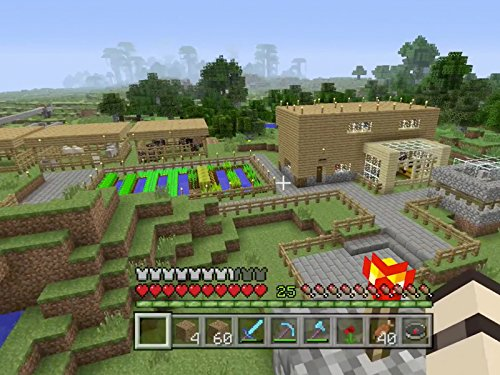

About Minecraft: The Ultimate Sandbox Game
Minecraft is one of the most influential and best-selling video games of all time. It was originally created by Markus "Notch" Persson and later developed by Mojang Studios. Since its official release in 2011, the game has sold over 200 million copies and boasts over 140 million monthly active players worldwide. Whether you want to survive against hostile mobs, build massive cities, or explore endless landscapes, Minecraft offers limitless possibilities for players of all skill levels.
The Origins of Minecraft
Minecraft started as a simple indie project in 2009. Notch, inspired by games like Infiniminer and Dwarf Fortress, wanted to create an open-ended world where players could mine, craft, and build anything they could imagine. The game quickly gained popularity during its early development stages, leading to Mojang Studios' founding and the official release of Minecraft 1.0 on November 18, 2011. In 2014, Microsoft acquired Mojang and Minecraft for $2.5 billion, ensuring its continued development and expansion.

Core Gameplay: What Makes Minecraft Special?
🛠 Mining and Crafting At its core, Minecraft is about gathering resources and crafting useful tools, armor, and structures. Players start with nothing and must chop wood, mine stone, and craft tools to survive. 🌍 Infinite Worlds to Explore Minecraft worlds are procedurally generated, meaning no two worlds are ever the same. Players can discover vast deserts, dense jungles, frozen tundras, and deep caves filled with hidden treasures. ⚔️ Survival and Adventure In Survival Mode, players must hunt for food, craft weapons, and battle monsters like zombies, skeletons, and creepers. For those looking for a challenge, Hardcore Mode adds permanent death—once you die, it's game over! 🏗 Creative Building For those who prefer creativity over combat, Creative Mode offers unlimited resources and the ability to fly. This mode is perfect for building castles, cities, pixel art, and even working computers using Redstone! 🎮 Multiplayer and Servers Minecraft is even better with friends! Players can join online servers, explore adventure maps, and participate in mini-games like BedWars, SkyBlock, and Hunger Games. ⚙️ Mods and Customization With thousands of mods available, Minecraft can be completely transformed with new biomes, mobs, game mechanics, and textures. From medieval RPG mods to futuristic sci-fi worlds, the possibilities are endless.
Why Millions Love Minecraft
- ✔ It Encourages Creativity – There are no limits to what you can build.
- ✔ Endless Replayability – Every world is different, and new updates keep things fresh.
- ✔ Great for All Ages – Whether you're 5 or 50, Minecraft is fun for everyone.
- ✔ Educational Benefits – Used in classrooms to teach coding, engineering, and problem-solving.
- ✔ A Strong Community – Millions of players, content creators, and modders keep the game alive.